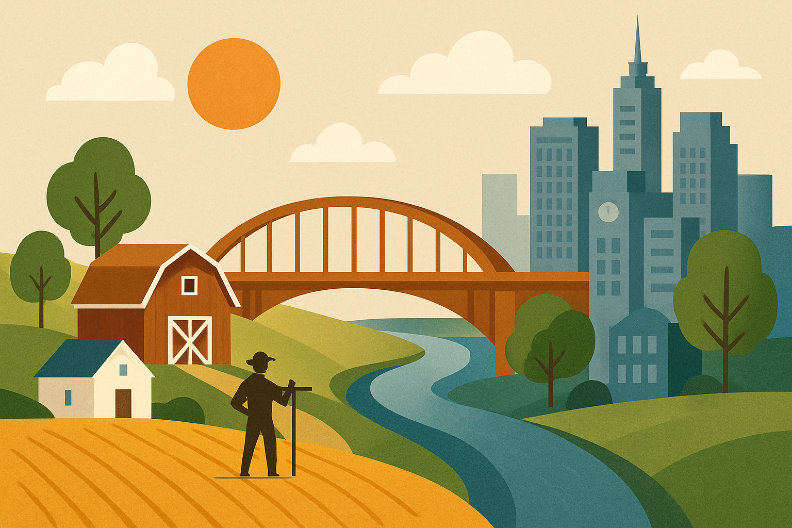

A conexão entre campo e cidade ajuda o estado de diversas formas, principalmente ao fortalecer a economia, a inovação tecnológica e a sustentabilidade social e ambiental.

Beneficios da Conexão Campo-Cidade
A conexão entre campo e cidade traz uma série de benefícios econômicos, sociais, culturais e tecnológicos, fundamentais para o desenvolvimento sustentável e a qualidade de vida de toda a sociedade.
- Geração de renda: A produção rural abastece mercados urbanos, movimentando a economia local e regional. Quando o campo vai bem, o comércio e os serviços urbanos também prosperam, criando um ciclo virtuoso de desenvolvimento e geração de empregos.
- Segurança alimentar: O campo garante o fornecimento de alimentos frescos e saudáveis para a população urbana, fortalecendo a segurança alimentar e a qualidade de vida nas cidades.
- Valorização dos produtos locais: Feiras e eventos que aproximam produtores rurais e consumidores urbanos aumentam a valorização dos produtos regionais e artesanais, estimulando a economia local.
- Gestão e transporte da produção melhorados
- Diminuição do preconceito sobre o estilo de vida Rural